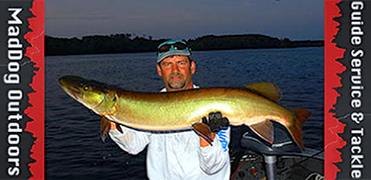
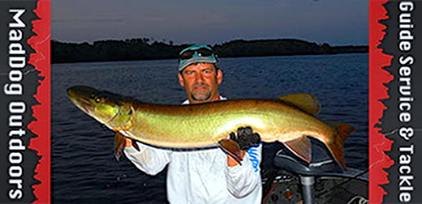
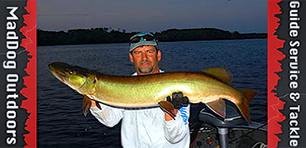
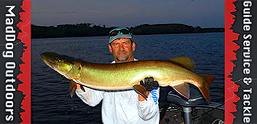

Connect with us on Facebook! Like to stay in touch with us and check out some more photos and content, we'd love to hear from you!
MadDog Outdoors' YouTube channel was founded in 2011. Footage is shot in 1080p with the GoPro. There are a variety of videos that include: